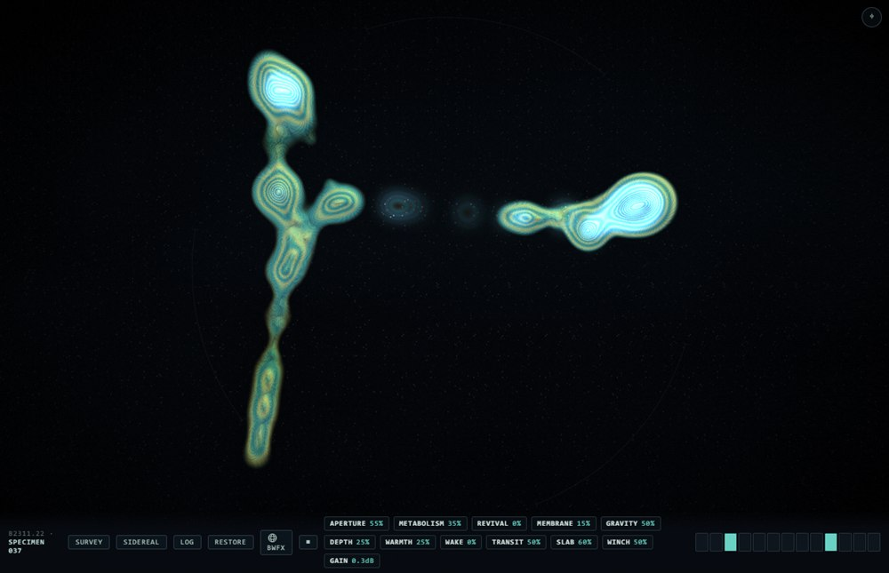
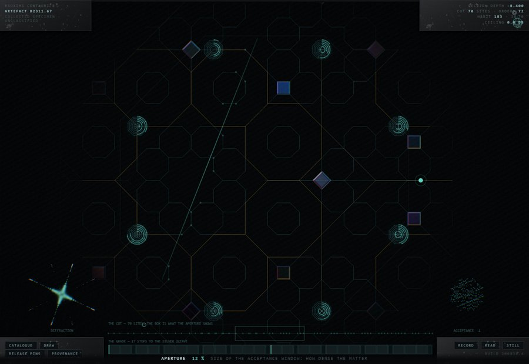
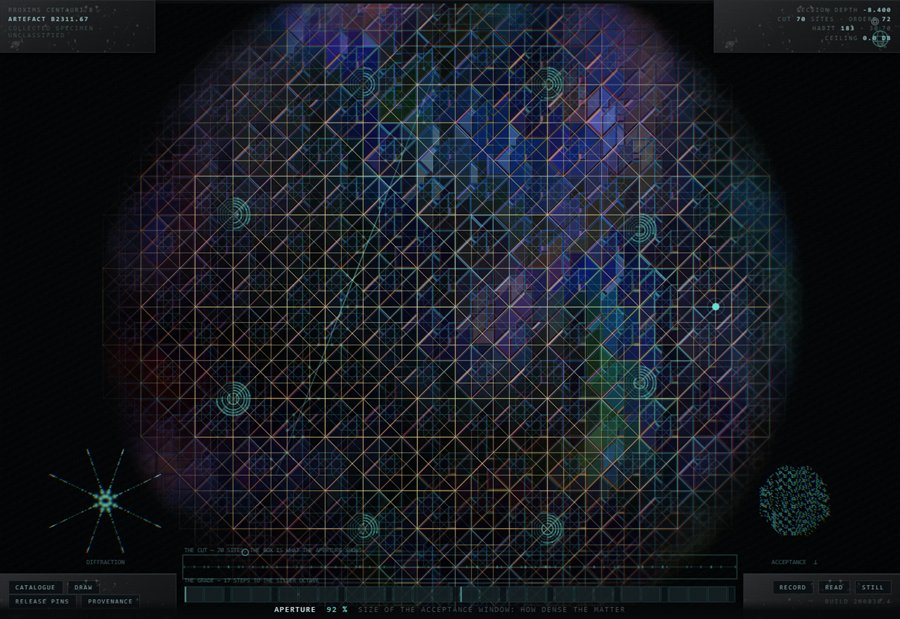

Two objects, and what they were found to do
Findings on the sound produced by the recovered artefacts B2311.22 and B2311.67: what has been established, what is suspected, and what remains entirely unclear.
One · The situationWhat was found, and in what condition
Neither object was made by us, and neither resembles anything we make. Both were recovered intact, both were sounding when recovered, and neither has been persuaded to stop.
B2311.22 was lifted on day 81 from a dry cistern at Kell Rille, on the lit side. It did not come up alone. A second body lay beside it, and on raising the first, the second changed pitch — an interaction recorded before either had been moved more than a metre, and the first indication that these objects are aware of one another.
B2311.67 was recovered 123 days later from a vault field at the Sabik Terminator, in the permanent twilight where the day side meets the night. There were sixty-seven of them. Each sat at the centre of its own void, spaced with a regularity that survives measurement, and no two voids touched.

The first thing established about both objects, and the thing that has shaped every attempt to work with them since, is that what we are holding is not the whole object. Each is a body of four spatial dimensions. What the hand meets is a three-dimensional section through it, and what the eye is shown is a two-dimensional projection of that section. Move the section and the object is not altered — a different part of it is simply present. Tissue and structure enter and leave existence at the boundary, continuously, without damage and without any sign that the object regards this as an event.
The second thing established is that neither object has controls. There are no markings, no surfaces that invite a hand, nothing that moves when pushed. Everything named in this report — every quantity, every reading, every word on the frames the expedition built around them — is ours. The objects present nothing. The apparatus exists so that a human being can act on them at all, and it should not be mistaken for part of them.
Two · B2311.22An object whose sound is its own shape
The sound of B2311.22 is the vibration of its own connectedness. It is not struck like a bell or blown like a pipe; it is a network, and what is heard is that network ringing according to how its parts are joined. Change which point is disturbed and the sound changes, because a different part of the structure is being asked to move.
The frequencies it produces do not form any series we use. There is no octave in them and no harmonic ladder; the intervals are those of the object's own construction and nothing else. This was not assumed but measured across the whole catalogue, and it holds without exception: no specimen sits within twenty cents of any harmonic series. The closest approach found anywhere in the collection lands exactly on that floor, and no nearer.

Energy does not stay where it is put
The behaviour that most clearly distinguishes this object from anything of ours is what happens after it is disturbed. Our instruments decay: a struck string loses energy and falls silent. B2311.22 does not lose the energy. It moves it, along its own structure, from one mode of vibration into its neighbours, so that a sustained note is not a note being held but the object exploring itself.
Exact recurrence
Under one configuration of the frame the object's output becomes exactly periodic — not approximately, but exactly. Every detail of the sound reassembles itself after an interval between one and a half and four seconds, depending on the specimen, and the reassembly is faithful to a correlation of 0.997. In the interval between recurrences, fractional partial states are audible that belong to neither the beginning nor the end.
The second body
The pair-recovery at Kell Rille was not an accident of storage. When a second object is placed within the same vessel it responds, and the character of the response is the most important finding of the survey.
It does not hear everything. It absorbs only at the frequencies it itself possesses, so how well two objects can hear one another is a fixed property of that pair. Two closely related bodies converse fluently; two unrelated ones are very nearly deaf to each other. When it answers, it answers in its own frequencies — the shape of what it heard, re-spoken through a different anatomy. The same statement, in another body's voice.
While both are sounding together, a third set of frequencies appears which belongs to neither of them and cannot be produced by either alone. It exists only for as long as both are sounding, is different for every pair, and vanishes the instant one falls silent. It accounts for roughly a sixth of what is heard during an exchange.
The finding we cannot account for
Being spoken to changes the listener. Not its behaviour — its structure. After a sustained exchange the responding body's own frequencies have moved, and they do not move back. The change accumulates in the direction of what it heard.
We have no account of the mechanism and no way to reverse it. It should be assumed that every object recovered has already been altered by whatever it spent time beside.
Three · B2311.67An object that is ordered and never repeats
The Sabik object is not a body in the sense that B2311.22 is a body. It is a lattice: a regular four-dimensional array, of which we again meet only a section. The section is a tiling of squares and rhombi with eightfold symmetry — perfectly ordered, and never repeating anywhere in its extent.
This is the more difficult of the two objects to describe, because the category its sound belongs to has no name in ordinary use. Sound as we make it is of two kinds. There are tones, in which energy sits at separated frequencies — every string, pipe, bell and oscillator ever built. And there is noise, in which energy is spread continuously — breath, hiss, the sea. Mathematics has always described a third possibility between them, in which energy occupies a set of frequencies that is infinitely subdivided and yet takes up no width at all: a dust with self-similar gaps at every scale.
No material we have ever made produces it. This object does.
The lengths at which the structure repeats its own logic are not arbitrary. They follow the sequence 5, 12, 29, 70, 169, 408 — the ratios native to eightfold order, as inevitable to this object as the octave is absent from it.
Two hundred and fifty-six specimens, and one body
The catalogue holds 256 specimens, and they sound so unlike one another that they were at first taken to be different structures. They are not. The survey measured the geometry of every one of them and found no variation whatever.
The figure the object casts changes with how much of the lattice is admitted, and this is the most legible thing on the frame: opened narrowly it throws a four-armed cross, opened wide, a full eightfold star. The temptation is to call this a change of symmetry, and the survey record must not, because the measurement says otherwise.


The strain that makes a crystal
One quantity on the frame does something none of the others do. Where travelling through the fourth dimension exchanges one arrangement for another equally aperiodic, this one tilts the section against the lattice — and a tilted cut through an ordered aperiodic body is the classical route by which such a body becomes an ordinary crystal. The object goes willingly.
This deserves to be set beside the corresponding finding for the other object. B2311.22 refuses the harmonic series absolutely: no specimen anywhere in its catalogue comes within twenty cents of one. B2311.67 will not produce a harmonic series either, until it is strained — and then it produces one to within a fifth of a cent.
What is seen is not what is heard
The visible structure of B2311.67 and its sustained sound are two different voices, and they belong to different parts of the object. What the eye is given is struck, rings and dies; what the ear is given persists. For as long as a sound is held, the observer is watching one thing and listening to another.
Four · TemperatureThe one condition that changes everything
Warming B2311.67 does not make it louder, brighter or faster. It makes the object's quantities begin to act on one another.
Held cold, every quantity of the object is independent: set it, and it stays where it was set, and nothing else moves. Warm the body and this stops being true. Quantities begin to drive other quantities — some in depth, some in rate — along connections that are fixed, that differ from specimen to specimen, and that no amount of handling will rearrange. The survey has recorded this as cross-talk for want of a better word, and section six gives the reason that word is probably wrong.
| Temperature | Effect on the material | Effect on the frame of observation |
|---|---|---|
| 77 K | none whatever | none |
| 293 K | ±8.96 % of range | none |
| 500 K | ±19 % | begins |
| 800 K | ±30 % | ±12 % |
Two further observations are worth recording precisely because they are negative. First, some quantities are never driven at any temperature the frame can reach: the object's loudness, its reference pitch, the identity of the specimen itself, and the size of the body. The object has never been observed to reach for these. Second, the response to heat is not uniform across the catalogue — at the top of the range 141 of the 256 specimens stir the frame of observation and the remaining 115 hold it perfectly still. That division is fixed per specimen and the survey cannot predict it from anything else it can measure.
Five · The frameWhat our apparatus can do, briefly
What follows is the shortest possible account of the expedition apparatus. It is short on purpose: the frame is ours, it is not interesting, and the rest of this report is about what it has not been able to settle.
Both objects are moved through the fourth dimension by a single continuous control. Nothing is created or destroyed by this; a different part of the object is brought into the section, and structure enters and leaves at the boundary as it does so.
B2311.22 answers the hand directly. Three kinds of contact have been distinguished and they produce different results: a circling motion, which accumulates and in which direction matters; a fast straight one, which disturbs and is then relaxed; and a still press held in one place, which deepens for as long as it is held and part of which remains after release. A separate control draws the section back towards where it was.
B2311.67 presents forty rings, arranged as eight rosettes of five, with no numerals, no pointers and no marked position. A ring is wound by dragging across it — right or up to raise, left or down to lower — with full travel in about a hand's width, and roughly four times finer with a modifier held. The rings sit on the body, so they travel with it, but they do not change places. The sounding line through the lattice can be dragged directly, a vertex can be arrested by touching it, and the temperature reading runs along the foot.
Six · The suspicionWhat the couplings may be for
Two findings, made on two different objects by two different methods, point the same way, and the survey records the resemblance without being able to prove anything from it.
In B2311.22, an object placed beside another answers it — hearing only at the frequencies it itself possesses, replying in its own voice, and being permanently altered by the exchange. In B2311.67, warming the body makes its quantities drive one another along an arrangement that is fixed, unique to each specimen, one-way, and slow.
The survey takes both of these seriously enough to say what follows from them, which is a change in method. If these couplings are a channel, then nothing about them will be found by setting a quantity to a value and leaving it there, any more than a language is found by holding one note. Every finding in this report that turned out to matter was found by moving something and listening to what moved with it.
Whoever now holds these objects is therefore asked to explore rather than to configure — and to treat the search for couplings as the work itself, not as preparation for it.
In practice that means: hold one quantity and listen for what follows it, and for how long afterwards. Warm the body and note which quantities begin to move together, since that grouping is fixed and is different for every specimen. Return to the same specimen after time has passed, because at least one of these objects does not stay as it was found. Place two of them in one vessel and let them run without intervening. And attend particularly to what happens at the two thresholds the survey has located but cannot explain — the temperature at which the frame of observation itself begins to drift, and the tilt at which an aperiodic body becomes a crystal and speaks, for a moment, in our intervals.
Seven · UnresolvedWhat the survey could not close
Question 1Why 500 K? Below it the material stirs and the frame of observation is untouched; above it the frame drifts too. Nothing about the structure predicts a threshold there, and nothing predicts which specimens have one: 141 of 256 stir the frame at the top of the range and 115 hold it still, the division is fixed, and it does not correlate with any other property the survey can measure.
Question 2What have the objects on the surface to do with the sound, and with one another? In B2311.67 what is seen and what is heard are demonstrably different voices. In B2311.22 the visible tissue does brighten where the energy sits — that much is established — but whether the visible features act on one another or merely display something decided elsewhere is not. The survey has no account of the interaction between the surface bodies at all: not with the sound, and not among themselves.
Question 3Why does a listening body change permanently, and is the change legible? The displacement accumulates in the direction of what was heard. If it is a record rather than mere wear, then every recovered object carries the history of whatever stood beside it, and we do not know how to read it.
Question 4Two objects were found together and interacting. Sixty-seven were found isolated, each at the centre of a deliberate void. Are these two conventions of storage, or two kinds of thing? The vault spacing is too regular to be incidental, and separation is exactly what would prevent the alteration described above.
Question 5One specimen is not understood. The first habit in the B2311.67 catalogue drives its own resonance to a level some six hundred times what any other specimen produces, and the frame must hold it back by sixty decibels for it to be worked with at all. The restraint is reliable and has been verified as reliable. The behaviour has not been explained, and that specimen should not be treated as representative of anything.
Question 6Neither object has an off state. Both were sounding when found, both have sounded continuously since, and the frame can only open onto that sound or close again. What the objects are doing when nothing is listening is not established, and the question may not be well posed.
Question 7Is B2311.67 a specimen of ordered aperiodic matter, or a device that produces the behaviour of such matter? The distinction matters. The first would make it a sample; the second would make it an instrument, and would mean someone built it to sound like something.
Question 8We can slide the section along one axis. We cannot rotate it. Everything reported here is what lies in one particular family of cross-sections through each object, and there is no reason to believe it is the informative one.
Question 9We have found no controls, and have built our own. It has not been established whether the absence of controls is a fact about these objects or a fact about us — whether we are failing to find an interface, or whether the question of an interface does not arise for something that was never meant to be operated.
Eight · CautionOn the frame, and on reading this report
Every quantity named in this report is an expedition quantity. The names on the frames were chosen by us, for our convenience, and describe what our apparatus does to the objects rather than any faculty the objects possess. Where this report says an object "answers" or "explores itself", these are the plainest available descriptions of measured behaviour and are not offered as claims about intent.
The three registers used here should be respected in any use made of this document. The temperature figures, the geometry, the spectral displacements and the permanence of the alteration are established and may be quoted. That the couplings constitute a channel is suspected, and is the reason the survey recommends the method it does; it is not a finding. The nine questions in section seven are open, and the second of them — what the visible bodies have to do with the sound, or with each other — is the one the survey has made least progress on and considers most likely to matter.
What can be said without qualification is that both objects produce sound continuously, that the sound is lawful and repeatable, that it is generated by structures which have no counterpart among our instruments, and that in one case the object is permanently altered by having been listened to and by having listened.
Both objects remain active. Neither has been disassembled.